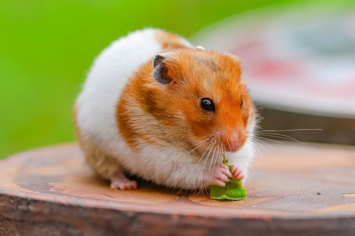
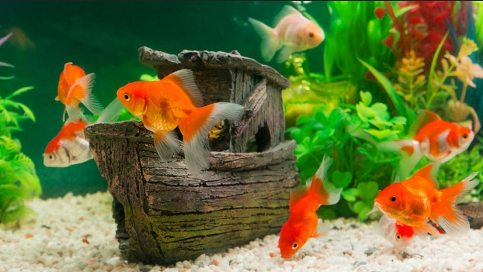
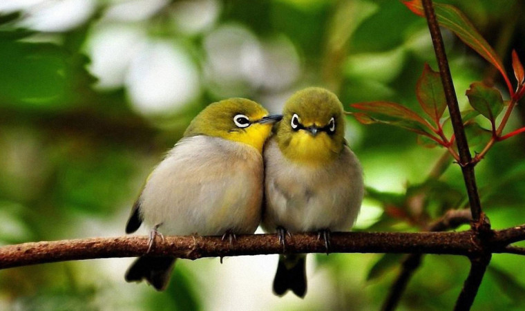
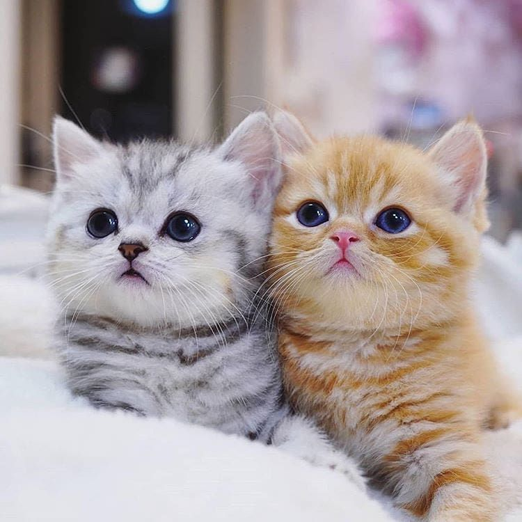
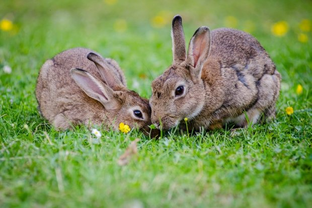

1. Hamster
Hamster adalah binatang sejenis hewan pengerat, kini terdapat berbagai jenis di dunia dan hampir ada di tiap negara. Jika ingin memelihara hamster, Anda perlu menyediakan kandang cukup luas, dilengkapi terowongan dan area untuk tidur. Karena walaupun tubuhnya kecil, hamster membutuhkan kandang yang luas kalau tidak ia akan kesulitan dan mudah stres. Hamster termasuk ke dalam subfamili Cricetinae. Subfamili ini terbagi ke dalam sekitar 19 spesies, yang diklasifikasikan ke dalam enam atau tujuh genus.
Spesies yang paling banyak dipelihara orang adalah hamster emas (Mesocricetus auratus). Di toko binatang peliharaan banyak yang memanggil mereka "beruang madu", "beruang kutub", dan "dalmantian," tergantung dari warnanya. Juga ada beberapa variasi, termasuk yang berambut panjang yang tumbuh rambut beberapa sentimeter dan selalu memerlukan perhatian khusus. Hamster lain yang dipelihara orang ada 3 spesies dari hamster kerdil. Hamster kerdil Campbell (Phodopus campbelli) adalah hamster yang paling banyak dipelihara di antara 3 spesies itu. Kemudian ada hamster Roborovski (Phodopus roborovskii) dan terakhir Hamster Tiongkok (Cricetulus griseus).
Hamster adalah makhluk omnivora. Makanan mereka biasanya butir padi, tetapi juga termasuk buah segar, akar, bagian hijau tumbuhan, invertebrata dan beberapa binatang kecil lainnya (serangga seperti belalang). Jika kita ingin memelihara hamster, hal paling aman adalah memberikan makanan berupa biji-bijian segar. Pilih biji-bijian yang tidak diawetkan namun bebas dari kutu dan bahan pewarna. Beberapa jenis daun segar mungkin tidak berbahaya bagi hamster, tetapi sebagian besar daun-daunan sudah tercemar pestisida yang membuatnya berbahaya. Walau sedikit, hamster rentan terhadap pestisida, sehingga sayur yang diberikan kepada hamster harus berkualitas tinggi.
2. Ikan
Panorama bawah laut sering kali dinilai menarik sehingga banyak orang yang rela menghabiskan uang banyak untuk menyelam dan menikmatinya. Kini, kemajuan teknologi memungkinkan orang menikmati panorama air laut di dalam ruangan. Kehadiran ikan hias di dalam rumah masyarakat modern dapat menjadi salah satu alternatif hiburan di tengah rutinitas yang padat.Ikan- ikan hias ini dipelihara untuk kesenangan, oleh karena itu bentuk, warna, ukuran, keserasian, dan kebiasaannya sehingga benar-benar harus diperhatikan.
Jenis ikan yang paling banyak di peliharan ialah jenis ikan air tawar. Pemeliharaan ikan hias air tawar biasanya di akuarium atau di kolam tergantung pada tujuan pemeliharaan. Ikan yang dipelihara untuk kesenangan, biasanya ditempatkan di akuarium sedangkan ikan yang dipelihara dengan tujuan mendapat keuntungan dari hasil budidaya biasanya ditempatkan di kolam. Salah satu pakan alami bagi ikan hias air tawar yang masih kecil adalah rotifera, yaitu organisme yang mudah ditemui di daerah perairan payau, tawar, maupun laut yang dalam keadaan normal berkembang biak secara partogenesis atau bertelur tanpa kawin
Beberapa jenis ikan tawar yang sering dijadikan hewan peliharaan adalah jenis ikan koi, ikan arwana, ikan mas, ikan maskoki, ikan oskar, ikan cupang dan ikan diskus. Bahkan sampai jenis ikan yang cukup berbahaya seperti ikan aligator, arapaimagiga, piranha dan lainnya sering di jadikan sebagai hewan peliharaan. Apapun jenis ikannya, asalkan kita tau cara merawatnya dengan baik tentu itu sah-sah saja. Yang terpenting adalah kita rajin memberi makan menguras tempat ikannnya baik itu kolam maupun aquarium dan lain sebagainya.
3. Burung
Salah satu hewan yang cocok untuk dipelihara ialah burung. Burung biasanya di pelihara karena beberapa hal diantaranya adalah karena keindahan bulunya atau kemerduan suaranya. Seperti burung murai dan perkutut misalnya, yang banyak dipelihara karena suaranya yang merdu dan juga bulunya yang menawan. Semakin bagus bentuk dan suaranya serta jenisnya burung tersebut makin memiliki nilai jual yang tinggi. Contoh lainnya ialah burung beo atau kakatua yang suara dapat menirukan suara manusia. Keunikan ini tentu menjadi minat untuk memeliharanya.
Namun ada juga burung yang dipelihara karena untuk di jadikan sebagai ajang percobaan seperti burung dara/merpati misalnya. Burung ini memeliki kemampuan terbang menuju betinanya dan di beberapa daerah sering manfaatkan sebagai ajang perlombaaan. Konsep perlombaannya cukup sederhana yang sampai duluan ke betinanya dinyatakan menang, hadiahnya dari perlombaan ini pun tidak kalah menarik, bisa sampai jutaan. Burungnya yang menang pun menjadi memiliki nilai jual yang tinggi. Namun perlu teknik perawatan tertentu agar burung dapat terbang dengan cepat atau pun agar tidak cepat sakit
Sebagai permulaan, burung parkit atau kenari cocok untuk dipelihara karena burung ini terbilang murah dan perawatannya mudah. Atau jika untuk usia anak-anak kita bisa berikan jenis burung gereja yang harganya sangat murah kisaran dua sampai lima ribu. Jika ingin mencoba yang cukup ekstrim, beberapa orang memelihara burung buas seperti elang misalnya. Namun burung buas seperti itu akan sedikit sulit memeliharanya, ini karena burungnya yang kapanpun berpotensi menyerang.
4. Kucing
Siapa yang tidak menyukai tingkah polah kucing yang menggemaskan? Biasanya anak-anak suka bermain dengan kucing. Kucing terbilang hewan yang sangat mudah dalam pemeliharaannya diantara hewan-hewan diatas. Terlebih jika area rumah tidak terlalu luas, kucing cocok untuk dipelihara. Dalam memelihara kucing paling minimal, setidaknya kita hanya perlu modal untuk makan si kucing. Karena kucing sendiri dapat tidur di berbagai tempat, tanpa perlu kandang dan tanpa perlu khawatir hilang.
Namun biasanya masalah yang dihadapi pemelihara kucing adalah kotorannya yang sembarangan. Beberapa orang tidak tahan bahakan sampai kesal apabila harus membersihkan kotoran kucing yang sembarangan. Solusi untuk masalah ini ialah melatih kucing kita untuk tidak sembarangan membuang kotorannya. Bisa dengan menyediakan tempat khusus ataupun mengajarkannya. Tetapi itu tidak mudah sehingga perlu teknik tertentu dalam hal ini
Salah satu kucing yang cocok dipelihara adalah jenis kucing persia. Bulunya sangat tebal dan hidungnya pesek, tetapi mereka sangat menggemaskan. Meski wajahnya jutek dan seperti orang bosan, dalam hati mereka sih enjoy saja kalau harus hidup berdampingan dengan majikannya asal kebutuhan terpenuhi. Kucing ini termasuk jenis yang tertua, dengan karakter yang tenang menghayutkan.
5. Kelinci
Kelinci terbilang hewan yang tidak agresif dan lembut. Kelinci bisa hidup selama 8-12 tahun. Kelinci juga mudah dirawat. Kelinci biasanya di rawat di luar ruangan. Suasana taman di luar ruangan ditambah kehadiran kelinci tentu akan menambah menarik keindahan taman tersebut. Ditambah lagi kelinci bukan hewan yang berbahaya sehingga banyak orang yang ingin memeliharanya
Untuk makanannya sendiri, yang umum didengar masyarakat ialah kelinci memekan wortel. Namun agar kelinci tetap sehat, Quesenberry menyarankan untuk memberikan kelinci makanan yang layak seperti sayuran hijau dan pelet (makanan hewan berbentuk butiran. Selain pelet, makanan kelinci terbilang murah dan terjangkau. Yang penting adalah memperhatikan kualitas dari makanannnya maka kelinci juga akan semakin sehat.